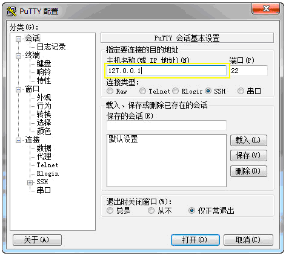

Linux+Apache+PHP+MySQL服务器环境(CentOS篇)
一、前言
CentOS（Community ENTerprise Operating System）是Linux发行版之一，它是来自于Red Hat Enterprise Linux依照开放源代码规定释出的源代码所编译而成。CentOS是架构LAMP（Linux+Apache+PHP+MySQL）的理想操作系统，具有较高的稳定性。本文以CentOS为例介绍linux系统下yum安装Apache+PHP+MySQL的方法。
二、工作就绪
- 2.1登录服务器
- 登录远程服务器，如果您的服务器在本地并安装有桌面环境，也可以直接打开服务器桌面，进入终端管理器。
在windows下Putty是一款出色的liunx远程登录工具，打开界面如下
在图中黄色框中填入服务器ip，点击打开，之后提示输入用户名和密码，验证成功后完成登录服务器。

在图中黄色框中填入服务器ip，点击打开，之后提示输入用户名和密码，验证成功后完成登录服务器。
- 2.2配置源和更新系统软件
- 2.2.1 定义非官方yum库
-
官方提供的软件是当前的稳定版本，但不是最新版本，为了更好的运行08cms，我们需要一些非官方的yum源。
rpm --import http://www.jasonlitka.com/media/RPM-GPG-KEY-jlitka
vi /etc/yum.repos.d/utterramblings.repo
添加以下内容
[utterramblings]
name=Jason's Utter Ramblings Repo
baseurl=http://www.jasonlitka.com/media/EL$releasever/$basearch/
enabled=1
gpgcheck=1
gpgkey=http://www.jasonlitka.com/media/RPM-GPG-KEY-jlitka
[注]vim编辑器修改文件的方法请自行百度之
- 2.2.2 更新系统
-
yum update
yum upgrade
- 2.2.3 检查系统软件
- 检查当前系统是否已经安装了apache 和 mysql
yum list installed | grep httpd
rpm -qa | grep httpd
yum list installed | grep mysql
rpm -qa | grep mysql
如果已经存在，请先卸载
- 2.3 创建目录
-
在这里我们约定各数据存放目录如下
网站数据 /www/htdocs
日志目录 /www/log
数据库文件 /www/mysql
运行以下命令完成目录创建
mkdir /www/mysql
mkdir /www/htdocs
mkdir /www/log/php
mkdir /www/log/mysql
添加apache和mysql用户
useradd -s /sbin/nologin -M apache
useradd -s /sbin/nologin -M mysql
创建了目录之后还需要改变目录属主和用户组，apache和mysql才能完成读写操作
chown -R apache:apache /www/htdocs
chown -R mysql:mysql /www/mysql
chown -R apache:apache /www/log/php
chown -R mysql:mysql /www/log/mysql
三、安装与配置
- 3.1 yum 安装 Apache + PHP + MySQL
-
yum -y install gcc gcc-c++ autoconf make aclocal libtool expat-devel libxml2-devel httpd php php-devel mysql mysql-server mysql-devel libevent libevent-devel mageMagick ImageMagick-devel php-mysql mod_ssl mod_perl mod_auth_mysql php-mcrypt php-gd php-xml php-mcrypt php-mbstring php-ldap php-pear php-xmlrpc php-pecl-memcache mysql-connector-odbc libdbi-dbd-mysql php-eaccelerator
- 3.2 配置php
-
vi /etc/php.ini
请根据自己的情况修改，这里只列出部分需要注意的设置
post_max_size = 32M
memory_limit = 256M
allow_url_fopen = On
upload_max_filesize = 32M
upload_tmp_dir = /var/tmp
log_errors = On
error_reporting = E_ALL & ~E_NOTICE | E_STRICT
display_errors = Off
error_log = /www/log/php/php_error.log
magic_quotes_gpc = On
- 3.3 配置apache
-
先给默认配置文件做个备份
cp /etc/httpd/conf/httpd.conf /etc/httpd/conf/httpd.conf.bak
编辑配置
vi /etc/httpd/conf/httpd.conf
根据自己的需要进行修改
DocumentRoot "/www/htdocs" # 修改为默认网站主目录
NameVirtualHost *:80
如果安装GBK版本08cms出现乱码，可能需要注释掉这个参数
#AddDefaultCharset UTF-8
启动apache服务
service httpd start
检查apache是否正常，打开浏览器，输入http://您的ip，如果看到默认apache test page页面，即表示成功启动。
- 3.4 配置mysql
-
系统已经自动安装好了mysql，但我们需要做些简单的修改和优化，配置数据库文件和日志存放位置，才能启动。
在 /usr/share/mysql/目录下有多个my-开头的cnf文件，我们可以针对我们自己的情况选择一个使用，我们这里选择my-medium.cnf
把它复制到/etc目录里
cp /usr/share/mysql/my-medium.cnf /etc/my.cnf
编辑
vi /etc/my.cnf
修改以下配置，在原有的基础上修改，没有的选项就添加
[client]
port = 3306
socket = /var/lib/mysql/mysql.sock
default-character-set = utf8
[mysqld]
user = mysql
datadir = /www/mysql
log-error = /www/log/mysql/mysql_error.log
log-bin=/www/log/mysql/mysql-bin
expire_logs_days＝7
character-set-server = utf8
--skip-external-locking
启动mysql
service mysqld start
系统会自动安装初始数据库，然后启动，如果有错误，请查看/www/log/mysql/mysql_error.log里的错误信息
设置mysql root用户密码
mysql
UPDATE mysql.user SET password = PASSWORD('你的密码') WHERE user = 'root';
FLUSH PRIVILEGES;
exit;
四、优化设置
- 4.1 安全设置，禁用 PHP 的敏感函数
-
vi /etc/php.ini
取消disable_functions前的#,改为
disable_functions = exec,shell_exec,system,popen,escapeshellcmd,escapeshellarg,gzuncompress,proc_open,proc_get_status
- 4.2 开启gzip压缩
-
gzip压缩可以减少服务器流量，但也会增加cpu资源消耗，是否要开启你需要根据情况决定
vi /etc/httpd/conf/httpd.conf
LoadModule deflate_module modules/mod_deflate.so
<IfModule mod_deflate.c>
DeflateCompressionLevel 6
AddOutputFilterByType DEFLATE text/html text/plain text/xml application/x-httpd-php
AddOutputFilter DEFLATE js css
<IfModule >
五、安装与配置
-
创建网站目录
mkdir /www/htdocs/demo
更改以下网站目录的属主和属组
chown -R apache:apache /www/htdocs/demo
配置虚拟主机配置
vi /etc/httpd/conf/httpd.conf
在最后添加
<VirtualHost *:80>
ServerName 域名.com
ServerAlias www.域名.com
DocumentRoot /www/htdocs/demo
</VirtualHost>
重启apache
service httpd restart
创建数据库
mysql -u root -p
create database demo; #demo为要创建的数据库名
exit;
环境搭建已经全部完成了，下面您只需要把08cms程序上传到/www/htdocs/demo，并把您的域名解析到您的服务器ip，即可完成08cms的安装，本教程到此结束。